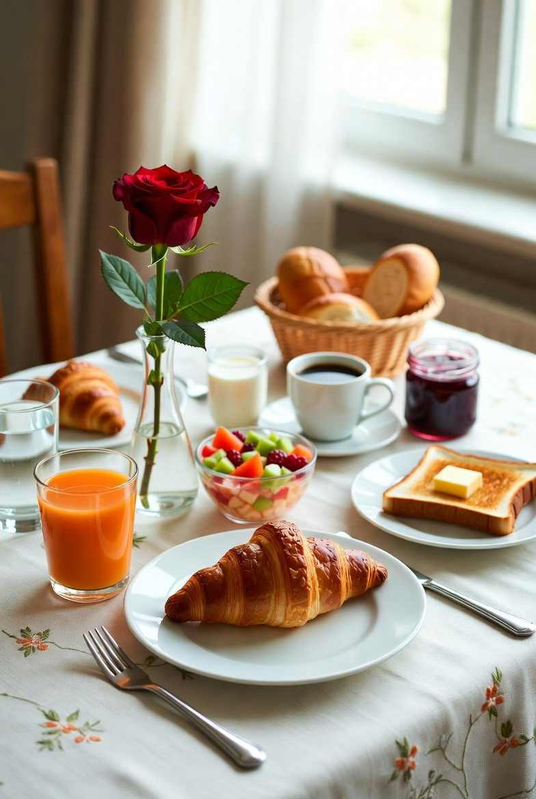

Login
Breakfast Recipes

Classic Blueberry Pancakes
❤️ Favorite
Ingredients:
1 cup all-purpose flour
2 tablespoons sugar
1 teaspoon baking powder
1/4 teaspoon salt
1 cup milk
1 large egg
2 tablespoons melted butter
1/2 cup fresh blueberries
Instructions:
In a bowl, combine flour, sugar, baking powder, and salt.
In a separate bowl, whisk together milk, egg, and melted butter.
Pour the wet ingredients into the dry ingredients and mix until combined.
Gently fold in the blueberries.
Heat a lightly greased pan over medium heat.
Pour 1/4 cup of batter onto the pan for each pancake.
Cook until bubbles form on the surface, then flip and cook until golden brown.
Serve warm.